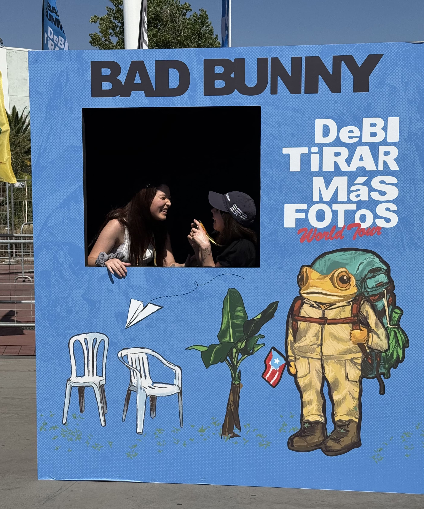

NUEVAYoL en vivo
¡Era una de las canciones que más quería escuchar en vivo y lo pasé increíble!
El tercer concierto de Bad Bunny en el Estadio Nacional fue una presentación marcada por la euforia total del público y una producción de alto nivel dentro de su gira “Debí Tirar Más Fotos World Tour”. El show mantuvo la energía de las fechas anteriores, pero con momentos aún más especiales gracias a la invitación sorpresa de Jowell & Randy
¡Era una de las canciones que más quería escuchar en vivo y lo pasé increíble!

Con mi amiga Génesis nos sacamos varias fotitos y dimos vuelta por el estadio antes de buscar nuestros asientos
Es una canción super especial y sólo tengo este mini registro ya que estuve abrazada con mi amiga durante toda la canción jeje
El concierto de Djo en Chile 2026, en formato sideshow, ofreció una presentación íntima y muy conectada con el público. El proyecto de Joe Keery destacó por su sonido alternativo con influencias de indie rock y electrónica suave, logrando un ambiente envolvente durante todo el show. La puesta en escena fue sencilla pero efectiva, priorizando la música y la interpretación. El público respondió con entusiasmo, especialmente en los temas más conocidos, cerrando una noche cálida y bien recibida por los asistentes.
El concierto de The Lumineers en Chile 2026, realizado en el Movistar Arena, fue una experiencia íntima y muy emocional. La banda logró una conexión constante con el público gracias a su estilo folk acústico y sus interpretaciones cargadas de sentimiento. El show combinó sus canciones más conocidas con su nuevo material, generando momentos de mucha cercanía y participación del público. En general, fue una presentación cálida, simple en puesta en escena, pero muy potente a nivel emocional, dejando una gran impresión entre los asistentes.